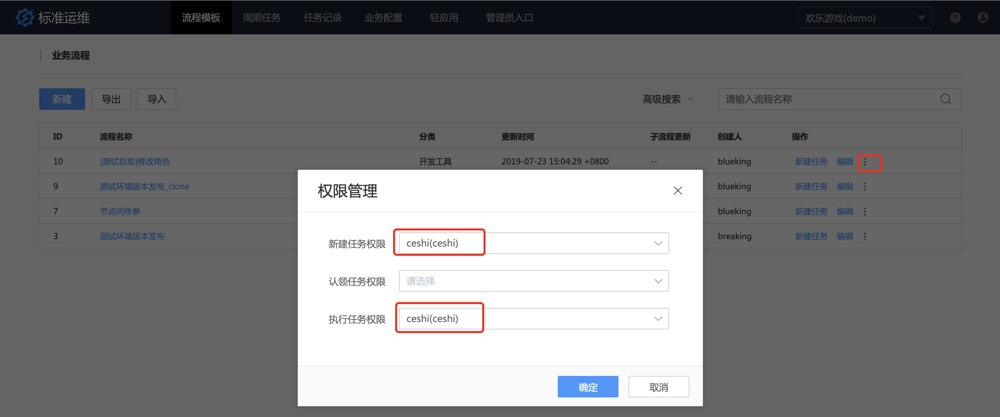
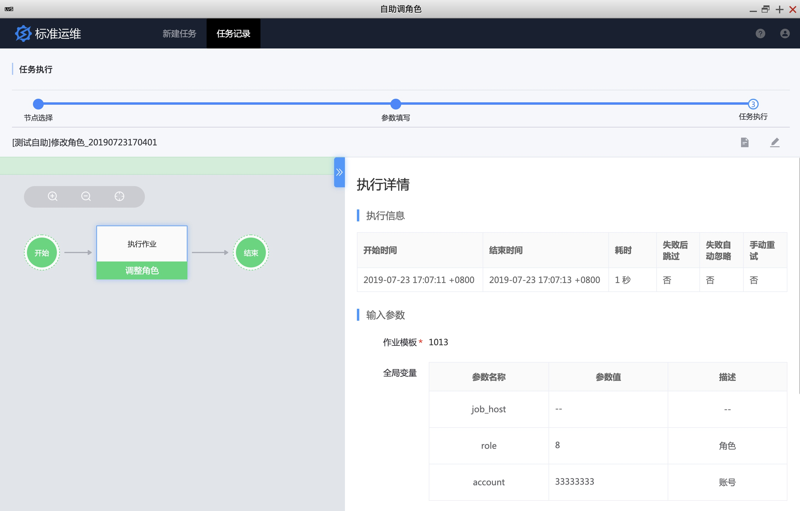

需求自助化:测试自助调整验收环境
情景
测试同学经常找运维同学调整测试环境的配置，比如调整不同的角色或代币（本文以调整角色为例）来验证功能是否符合预期，一来让运维时间碎片化，二来交付给需求方的时间不固定，需求方也不满意，影响整体效率。
需要一种让需求方自助操作的入口，简化输入，关注输出，解脱运维的同时提升需求方的满意度。
前提条件
- 准备一个
测试角色，并在蓝鲸配置平台中将其添加到业务的测试人员角色中 - 准备调整角色的标准运维流程模板
操作步骤
- 新建标准运维流程模板
- 新建自助调角色轻应用
- 测试轻应用
1. 新建标准运维流程模板
1.1 新建流程模板
调整用户角色的逻辑很简单，一般作业平台的一个作业即可满足，此处不展开介绍如何创建作业。
新建流程模板，如下。

由于轻应用重点之一是简化输入，所以尽可能方便需求方填写参数。此处有 2 个参数：角色 和 账号。
角色一般可以枚举，所以使用下拉框，简化输入。

账号这里是数字，使用输入框，同时加上正则，帮用户纠错。

保存任务流程，并执行任务，验证任务流程可调整角色。
1.2 给测试账号授权
选择流程模板，对测试账号 ceshi 赋予 新建、执行任务权限.

在业务配置中设置任务真正的执行者（比如执行作业平台的作业），因为测试没有运维权限。

2. 新建自助调角色轻应用
点击轻应用导航栏，按提示新建轻应用。

3. 测试轻应用
使用测试账号 ceshi 登录蓝鲸，找到刚才创建的自助调角色SaaS。


点击自助调角色SaaS

执行任务

至此，测试同学自助调整测试环境的轻应用已配置完毕，后续测试同学直接打开自助调角色SaaS 即可完成需求。
此外，如产品和测试需要调整配置，DBA 需要 AWR 报告，测试需要添加白名单等等运维的日常需求，均可以通过轻应用方式解决，简化输入，关注输出，在解脱运维的同时，还能提升需求的满意度。